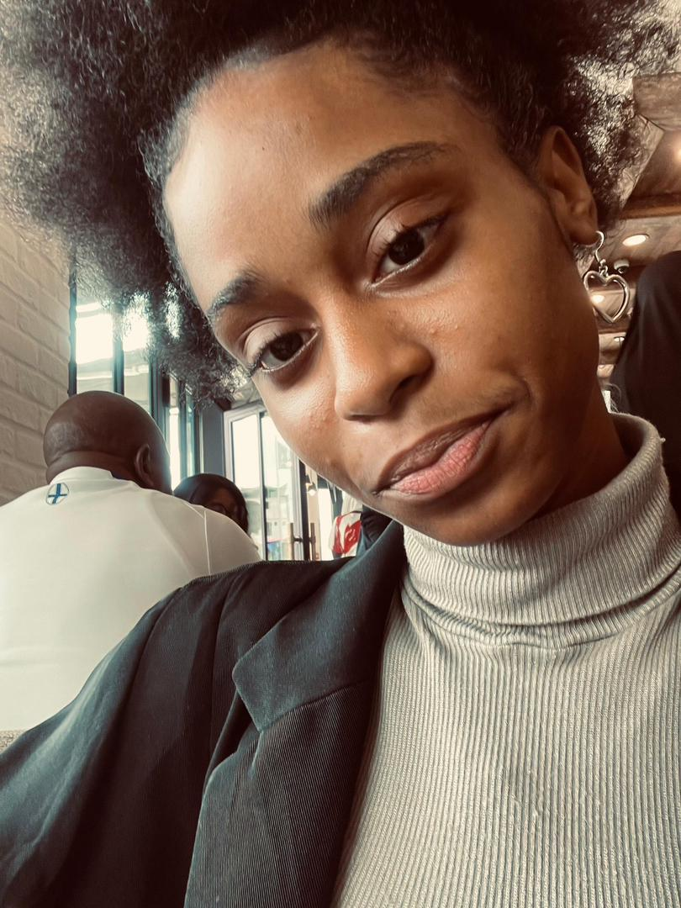

Il était une fois, dans un pays lointain d’Afrique appelé le Gabon, au lycée d’application Nelson Mandela, un garçon nommé Noé Donovan.
Au début de son année de terminale, il s’était fait une promesse : "Cette année, je ne me concentre que sur l’école. Je me fous de tout
le reste. Je ferai tout pour sortir premier, et le reste viendra après."
Un jour, il dit à son ami :
— Ah Merlo, Je ne pense pas que cette année quelque chose va pop. Je me concentre sur le sky c’est tout.
Son ami lui répondit :
— Oh Mani, pourquoi tu dis ça ? Moi, je sens qu’il va se passer quelque chose de bien pour toi. Forcément ca va pop T’es une machine c'est dans le sang
de l'agneau
Noé sourit légèrement.
— Normalement mon parent....
Mais au fond de lui, il n’y croyait pas vraiment. Il se disait que son ami cherchait sûrement à le réconforter. Puis,
au prenier jour de l’année, il aperçut une fille assise au premier rang de la classe. Il se dit qu’elle était vraiment belle, mais chassa
aussitôt cette pensée.
Je dois me concentrer sur l’école. Je n’ai pas le temps pour ça… et en plus, je ne sais même pas draguer. Pensa t-il sans savoir la suite des évenements....
(image representative de la fille en question)

Lors du premier trimestre il se rendit compte que ca allait etre compliquer d'etre premier de la classe car cette fille est vraiment tres intelligente ce qui
fis en sorte qu'il se rapproche tout les deux. Noé cherchait à s'améliorer et elle pu l'aider à celà tout en passant du temps ensemble ce qui fit en sorte que
notre co-protagoniste commence à vraiment apprécier cette fille.....
Au deuxieme trimestre Noé dit à un de ses amis dénomés Michael :
- Man, je crois que j'aime l'autre là... Olivia
Son ami s'écria :
- Pohpoh donc tu veux tchouk Olivia !
Noé repliqua avec des insultes amicales pourqu'il se taisent
Michael eu une idée il dit à Noé de regarder olivia pour il fit appel à cette derniere à l'appel de son nom Noé détournewr le regard ne voulanrt pas rencotrer le Sien
C'est alors que Michael se rendit compte y avait possibilités que son ami soit anouireux de cette fille.
Les jours passerent jusqu'à la mention des examens blanc par leur prof.
Etant chez lui Noé se mit à reflechir et se dire qu'il serait temps de voir la réalité et d'accepter qu'il ressent de l'amour envers Olivia
c'est-à lors que une Occasion qui ne se présentera plus se passa.
Olivia fit un prank tiktok à Noé dont il ne c'étaot pas rendu compte et ce prank se terminait par la phrase suivante :
- Toi voulir de moi ?
Face à cette question notre co-protagosinste se mit à réfléchir si il devait répondre sincerement ou non puis il se décida et dit :
- Oui....
C'est alors que elle lui dit que c'était un prank et repliqua en disant :
- Si tu veux de moi tu ne me le dis pas ?
Etant pertubé par la tourmure des choses il dit:
- Je ne sais pas c'est une sorte de mécanisme
elle répliqua :
- On attend alors que tu sortes de ton mécanisme.....
Ce message agissa comme une bombe H, Notre co-protagoniste était perdu il ne savait pas comment interpréter le message c'est alors qu'il demanda conseil à son ami Michael
qui lui dit :
- Tu étais devant les goal sans gardien et tu as réussi à fouata je wanda sur toi
C'est alors que Noé pris la décision d'avouer ses snetiments à Olivia ce qu'il fit le jour d'apres mais malheuresement nos deux co-protagoniste se sont laissés en mauvais Noé rentra
alors déprimer c'est-alors qu'il recu un message de Khaleesi aka Olivia ils eurent alors un grande conversation ce qui déboucha sur un début de fleurte dew nos deux co-protagoniste
Ils s'écrivaient, s'envoyaient des tiktoks des coeurs etc... À l'arriver des examens ils s'encouragerent mutuellement à étudier puis le 26 mars Olivia pris la décision d'accepter la
demande de Noé ce qui le rempli de joie et depuis ce jour nos deux amoureux continue de s'aimer et surpasse tout ensemble.
FIN
Ceci est pour toi ma dulcinée que j'aime tant joyeuse Saint-Valentin ❤️